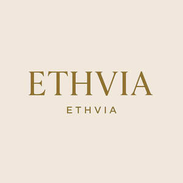

Trade Mark Journal No.2025/052 26 December 2025
UK00004309359 12 December 2025 (3,35)

- Class 3
- Skincare cosmetics; Anti-aging skincare preparations; Anti-aging moisturizers used as cosmetics; Skincare preparations; Moisturisers [cosmetics]; Skin moisturizers used as cosmetics; Anti-aging moisturizers; Anti-ageing moisturiser; Suncare lotions [for cosmetic use]; Cosmetic moisturisers; Anti-ageing creams [for cosmetic use]; Cosmetic products in the form of aerosols for skincare; Moisturising skin lotions [cosmetic]; Anti-aging creams [for cosmetic use]; Beauty serums; Acne cleansers, cosmetic; Facial moisturisers [cosmetic]; Non-medicated skincare preparations; Skin cleansers [cosmetic]; Moisturising skin creams [cosmetic]; Suncare lotions; Beauty serums with anti-ageing properties; Facial creams [cosmetics]; Anti-aging creams; Anti-ageing creams; After-sun oils [cosmetics]; Skin moisturisers; Anti-ageing serums for cosmetic purposes; Skin care lotions [cosmetic]; Beauty lotions; Skin care cosmetics; Skin moisturizer; Skin moisturizers; Skin moisturiser; Skin balms [cosmetic]; After-sun lotions [for cosmetic use]; Moisturisers; Beauty care cosmetics; Skin care creams [cosmetic]; Cosmetic creams for skin care; Skin recovery creams [cosmetics]; Skin creams [cosmetic]; Skin creams [for cosmetic use]; Cosmetic creams for the skin; Facial cleansers [cosmetic]; Anti-wrinkle creams [for cosmetic use]; Cosmetics; Sunscreen creams [for cosmetic use]; Cosmetic nourishing creams; Skin masks [cosmetics]; Skin cleansers; Moisturiser; Self-tanning preparations [cosmetics]; Moisturizers; Cleansing creams [cosmetic]; Skin moisturizer masks; Anti-ageing serum; Hairstyling serums; Cosmetic facial lotions; Facial lotions [cosmetic]; Exfoliants for the care of the skin; Body and facial creams [cosmetics]; Non-medicated skin serums; Facial moisturizers; Cosmetic creams and lotions; Exfoliants for the cleansing of the skin; Skin care oils [cosmetic]; Moisturising body lotion [cosmetic]; Beauty creams; Anti-aging serum for cosmetic use; Skin lotions; Lotions for the skin; Beauty balm creams; Hair care lotions [for cosmetic use]; Skin fresheners [cosmetics]; Sunscreens [for cosmetic use]; Skin cleansing lotion; After-sun milks [cosmetics]; Cosmetic massage creams; Skin toners [cosmetic]; Body creams [cosmetics]; Sunscreen [for cosmetic use]; Skin whitening creams; Creams (Skin whitening -); Hair care creams [for cosmetic use]; Tanning oils [cosmetics]; Cosmetic hair lotions; Facial creams [cosmetic]; Facial creams [for cosmetic use]; Skin make-up; Sun care lotions [for cosmetic use]; Exfoliating creams; Suntan lotion [cosmetics]; After-sun milk [cosmetics]; Skin cleansers [non-medicated]; Skin whitening preparations [cosmetic]; Hair moisturisers; Moisturizing creams; Creams for tanning the skin; Aromatherapy creams; Cosmetic products for the shower; Cosmetics for use in the treatment of wrinkled skin; Skin cream [for cosmetic use]; Skin lotion; Anti-aging cream; Skin hydrators; Cosmetics for use on the skin; Creams (Cosmetic -); Cosmetic creams; Aromatherapy lotions; Organic cosmetics; Cleansing lotions; Night creams [cosmetics]; Skin hydrators for cosmetic purposes; After-sun lotions; Facial gels [cosmetics]; Anti-wrinkle creams; Hair care serums; Beauty creams for body care; Facial cleansers; Moisturising creams; Cosmetic preparations for skin firming; Exfoliant creams; Anti-wrinkle cream [for cosmetic use]; Self-tanning preparations [cosmetic]; Cosmetic products in the form of aerosols for skin care; Colour cosmetics for the skin; Cosmetics for suntanning; Moisturising gels [cosmetic]; Skin creams; Creams for the skin; Hair moisturizers; Moisturizing preparations for the skin; Hair cosmetics; Facial lotions; Lip balm; Lip balms; Lip balm [non-medicated]; Non-medicated lip balms; Lip balms [non-medicated]; Lip cream; Lip gloss; Lip glosses; Lip makeup; Lip cosmetics; Lip pomades; Shaving balm; Hair balm; Lip liner; Lip gloss palettes; Lip tints; Shave balm; Beard balm; Cleansing balm; Lip conditioners; Blemish balm creams; Lip liners; Aftershave balm; Lip pencils; Lip neutralizers; Lip protectors [cosmetic]; Lip rouge; Lip polisher; Non-medicated balm for hair; Lip stains [cosmetics]; Lip protectors (Non-medicated -); Shaving balms; Baby bottom balm; Lip coatings (Non-medicated -); After-shave balms; Hair balms; Lip coatings [cosmetic]; Skin balms (Non-medicated -); Non-medicated skin balms; Aftershave balms; Lip care preparations; Non-medicated lip care preparations; Balms (Non-medicated -); Lip stains for cosmetic purposes; Foot balms (Non-medicated -); Skin cleansing cream [non-medicated]; Aftershave moisturising cream; Cuticle cream; Lipstick; Skin cleansing cream; Mattifying gel cream; Skin relief serum [cosmetic]; Nail cream; Moisturizing body lotions; Sun protectors for lips; Facial lotion; Skin cream; Eyebrow gel; Cleansing cream; Moisturising creams, lotions and gels; Eyebrow mascara; Scented body lotions and creams; Scented body creams; Refill packs for skin care cream dispensers; Hydrating creams for cosmetic use; Shaving lotion; Moist wipes impregnated with a cosmetic lotion; Facial concealer; Cosmetic creams for dry skin; Face cream (Non-medicated -); Facial cream [for cosmetic use]; Cosmetic pencils for cheeks; Eye wrinkle lotions; Non-medicated scalp treatment cream; Hand lotion (Non-medicated -); Milky lotions for skin care; Skin creams [non-medicated]; Non-medicated skin creams; Body mask lotion; Hair lotion; Non-medicated cleansing creams; Cream for whitening the skin; Whitening the skin (Cream for -); Non-medicated skin lotions; Facial butters; Body mask cream; Gel scrub; Gel eye masks.
- Class 35
- Online retail store services relating to cosmetic and beauty products; Affiliate marketing; Promotion, advertising and marketing of on-line websites; Online marketing; Consultancy services in the field of affiliate marketing; On-line promotion of computer networks and websites; Referral marketing; Online advertising; Online advertising on a computer network; Advertising the goods and services of online vendors via a searchable online guide; Online advertising on computer networks; On-line trading services in which seller posts products to be auctioned and bidding is done via the Internet; Advertising of business web sites; On-line advertising and marketing services; Advertising, including on-line advertising on a computer network; Advertising services for the promotion of e-commerce; On-line advertising on a computer network; Online advertisements; On-line advertising on computer networks; On-line advertising; Product marketing; Internet marketing; Online advertising services; Providing a searchable online advertising guide featuring the goods and services of other on-line vendors on the internet; Provision of an online marketplace for buyers and sellers of downloadable digital image files authenticated by non-fungible tokens [NFTs]; Advertising, marketing and promotion services; Marketing, advertising and promotion services; Promoting the sale of goods and services of others by awarding purchase points for credit card use; Promoting the goods and services of others by arranging for sponsors to affiliate their goods and services with awards programs; Promotional marketing; Promoting the goods and services of others through advertisements on Internet websites; Online advertising via a computer communications network; Marketing services in the field of web site traffic optimization; Providing a searchable online advertising guide featuring the goods and services of online vendors; Advertising, marketing and promotional services; Advertising, promotional and marketing services; Marketing, advertising, and promotional services; Advertising via the Internet; Providing marketing information via websites; Distribution of advertising mail and of advertising supplements attached to regular editions; Website traffic optimization; Promotion [advertising] of business; Trade marketing [other than selling]; Advertising and marketing; Rental of advertising space on web sites; Advertising and marketing services provided by means of blogging; Compilation of online business directories; Promoting the goods and services of others through discount card programs; Providing online marketplaces for sellers of goods and or services; Web site traffic optimization; Provision of an online marketplace for buyers and sellers of goods and services; Dissemination of advertising for others via an on-line communications network on the internet; Marketing; Web site traffic optimisation; Influencer marketing; Compilation of advertisements for use as web pages on the Internet; Compilation of advertisements for use on internet web pages; Website traffic optimisation; Sales promotion through customer loyalty programs; Promoting the goods and services of others by arranging for sponsors to affiliate their goods and services with sports competitions; On-line advertising via a computer communications network; Direct marketing; Promoting the music of others by means of providing online portfolios via a website; Mediation of contracts for purchase and sale of products; Advertising and marketing services; Advertising and promotion services; Distribution of advertising, marketing and promotional material; Advertising on the Internet for others; Promotion [advertising] of travel; Mail-order advertising; On-line advertising on computer communication networks; Banner advertising; Marketing services provided by means of digital networks; Organisation of customer loyalty programs for commercial, promotional or advertising purposes; Advertising services provided by a radio and television advertising agency; Provision of an on-line marketplace for buyers and sellers of goods and services; Advertising services provided via the internet; Advertising automobiles for sale by means of the Internet; Direct marketing consulting; Marketing the goods and services of others by distributing coupons; Promoting the artwork of others by means of providing online portfolios via a website; Provision of online marketplaces for buyers and sellers of goods and services which are authenticated by non-fungible tokens; Providing an on-line commercial information directory on the internet; Direct marketing services; Targeted marketing; Administration of sales promotion incentive programs; Administration of a discount program for enabling participants to obtain discounts on goods and services through use of a discount membership card; Promoting the goods and services of others by arranging for sponsors to affiliate their goods and services with sporting activities; Business information services provided online from a global computer network or the internet; Advertisement for others on the Internet; Providing searchable online advertising guides; Modeling for advertising or sales promotion; Marketing research in the fields of cosmetics, perfumery and beauty products; Retail services in relation to beauty implements for animals; Retail services in relation to beauty implements for humans; Wholesale services in relation to beauty implements for humans; Wholesale services in relation to beauty implements for animals; Commercial information and advice services for consumers in the field of beauty products.
Vladyslav Drozhnikov
Angelica Amitrano